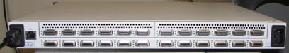
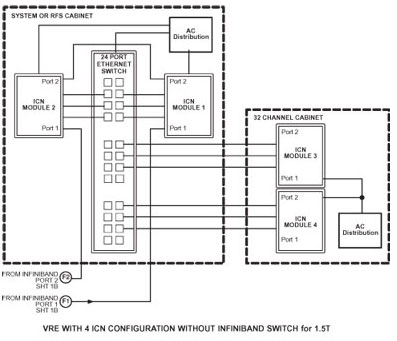
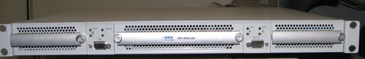

Operating Documentation
Direction 5440001-3, Rev# 6
Signa HDxt Service Methods
Module Version 1.0, Version Date 5/15/07
Operating Documentation |
| Required Persons | Preliminary Reqs | Procedure | Finalization |
|---|---|---|---|
| 1 | Not Applicable | 10 mins | Not Applicable |
Infiniband switches were included with 32 channel 1.5T systems and all 3.0T systems shipped before November 2006. These systems have been validated to operate without the Infiniband switch. The process describes how to rewire the system to operate without the Infiniband switch when this switch has failed.
| Item | Qty | Effectivity | Part# | Manufacturer | |
|---|---|---|---|---|---|
| Screwdriver | 1 | - | - | - | |
Open the back cover of the RFS Cabinet and remove the Infiniband Switch power plug from the power strip. See Illustration 1.
Illustration 1: Switch Power Strip

| NOTE: | Switching off the power strip will result in all the devices connected to the strip losing power! If the ICNs are connected to the same power strip and you want to power off the power strip, follow the ICN ON/OFF procedure. |
Remove the power cable from the back of the switch. See Illustration 2.
Illustration 2: Infiniband Switch Rear View

| NOTE: | The Infiniband switch has two power inputs on the rear of the unit, one on the left side and one on the right side. |
All the Infiniband cables will be removed from the rear of the Infiniband switch. Change or remove the Infiniband cables as shown in Table 1. Two cables will be routed to the Infiniband board and the remaining three cables will be removed.
Table 1: Infiniband Switch Rewiring Table
| Original Infiniband Cable From To Description | New Infiniband Cable From To Description |
|---|---|
| Infiniband Switch Port 5 to ICN1 Port 1 | Infiniband Board Port 1 to ICN1 Port 1 |
| Infiniband Switch Port 4 to ICN2 Port 1 | Infiniband Board Port 2 to ICN2 Port 1 |
| Infiniband Switch Port 2 to ICN3 Port 1 | None, Remove cable completely |
| Infiniband Switch Port 3 to ICN4 Port 1 | None, Remove cable completely |
| Infiniband Switch Port 1 to Infiniband Board Port 1 | None, Remove cable completely |
Confirm your system has been configured per the following illustrations. See Illustration 3 for 1.5T systems, and Illustration 4 for 3.0T systems.
Illustration 3: 1.5T System 4 ICN Configuration Without Infiniband Switch

Illustration 4: 3.0T System 4 ICN Configuration Without Infiniband Switch

Remove the screws of the Infiniband switch from the front, as shown in Illustration 5.
Illustration 5: Infiniband Switch Front View

Gently slide the Infiniband switch out from the front of the cabinet.
If a returnable FRU, securely repack the defective switch into its package to send it back to the respective place of destination.
No finalization steps.